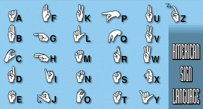

Language arts
Non-verbal communication
Nonverbal communication shows to the use of body language, facial expressions, gestures, and tone of voice to
convey meaning without using words. It can include things like posture, eye contact, hand movements, and
even the way someone breathes. Some nonverbal communication languages include the American sign language
below. This is the alphabet of the sign language

Another very useful system of hand signals was devised to help hearing-impaired people to communicate.
The system, called sign language, uses special hand positions, gestures, and even facial expressions to
represent words and phrases and finger spelling for words for which there are no signs. In the United
States, American Sign Language, Signed English, and finger spelling are used by the hearing-impaired to
communicate with each other and with people who can hear.